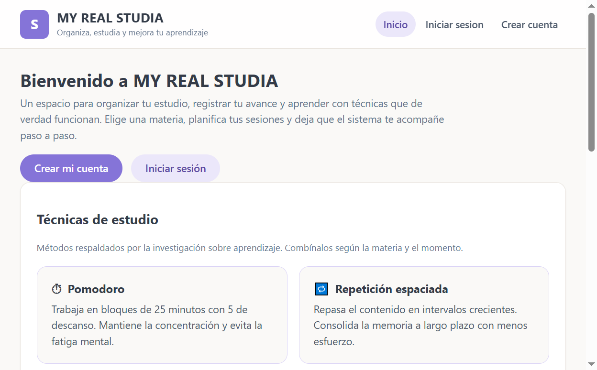

Arquitectura, módulos, API, seguridad y guía de operación de la plataforma académica.

Captura de la página de inicio del proyecto
Plataforma educativa para organizar materias, planificar sesiones, practicar, registrar errores y analizar el progreso a partir de información real del estudiante.
Gestiona materias y tareas, estudia con Smart Focus, repasa tarjetas y consulta su progreso.
El tutor consulta el avance académico; el administrador también gestiona cuentas y recursos.
php-practice enseña PHP y PDO por separado.
React 19Vite 8React Router AxiosNode.js 20+Express 5 mysql2MySQL / MariaDBPHP + PDO
XAMPP aporta MySQL y Apache; el frontend y el backend se inician por separado y no los sirve Apache.
La aplicación es una SPA (Single Page Application): React cambia de vista sin recargar
toda la página. React Router gestiona rutas públicas, privadas y protegidas por rol.
Las páginas se importan bajo demanda con lazy y Suspense.
| Parte | Responsabilidad |
|---|---|
pages/ | Pantallas por funcionalidad: Panel, Materias, Study Rescue, Memory Lab, etc. |
components/ | Componentes reutilizables organizados con Atomic Design. |
context/ | Estado compartido de sesión y roles. |
services/ | Solicitudes Axios a la API REST, separadas por dominio. |
styles/ | Tokens visuales, componentes y comportamiento responsive. |
/iniciar-sesion/registro/materias/cronometro/planificador/memory-lab/error-dna/knowledge-map/study-rescue/note-to-quiz/passport
El cliente centraliza URL base, cookies de sesión, renovación de acceso y errores HTTP
en services/api.js. Las pantallas llaman funciones de servicios, no construyen
consultas SQL ni dependen directamente de Express.
Node.js ejecuta JavaScript en el servidor; Express organiza rutas y middlewares. El flujo de una petición sigue capas para mantener responsabilidades claras:
| Método y ruta | Uso |
|---|---|
POST /api/auth/register | Registrar una cuenta pública de estudiante. |
GET /api/subjects, POST /api/subjects | Listar y crear materias propias. |
POST /api/study-rescue/plan | Previsualizar el plan, sin guardar tareas. |
POST /api/study-rescue/apply | Crear las tareas del plan en Smart Planner. |
POST /api/ai/companion | Consultar el asistente académico. |
POST /api/ai/note-to-quiz | Convertir apuntes en ejercicios. |
{ "success": true, "error": null, "message": "…", "data": {} }
mysql2 y parámetros, no concatenación de datos.
La base inicial studia_db contiene 18 tablas. Las migraciones idempotentes
completan el esquema según los módulos instalados, por ejemplo el historial de repasos y
las entradas del Academic Passport.
| Grupo | Tablas / información |
|---|---|
| Identidad | users, student_profiles, refresh_tokens, tokens de recuperación. |
| Estudio | subjects, topics, study_sessions, tasks. |
| Práctica | exercises, intentos, errors, tarjetas y sus repasos. |
| Analítica | Preferencias, planes, recomendaciones, reportes, logros y pasaporte académico. |
Hash bcrypt; nunca se almacenan en texto plano.
JWT de acceso y refresh token en cookie httpOnly con rotación.
Reglas con express-validator antes de procesar peticiones.
Se verifica que la fila pertenezca al usuario autenticado.
.env se excluyen de Git. Nunca se incluyen claves en el código ni en este manual.| Proveedor | Uso | Configuración |
|---|---|---|
| Google Gemini | Generación estructurada mediante generateContent, con modelos alternativos. | GEMINI_API_KEY, nombre de modelo y timeout. |
| OpenAI compatible | Proveedor alternativo de chat completions si se configura. | OPENAI_API_KEY, OPENAI_BASE_URL, modelo. |
La integración está implementada, pero en el entorno revisado no se confirmó una clave
Gemini válida. Para una demostración con IA real debe configurarse GEMINI_API_KEY
en backend/.env y reiniciar el backend. No se debe compartir la clave ni guardarla
en el repositorio.
Hay pruebas de respuesta estructurada simulada, JSON inválido, ausencia de credenciales, estrategias faltantes y permisos de propiedad. Estas pruebas no consumen cuota de IA ni requieren MySQL.
backend/database/studia_database.sql con phpMyAdmin.Copy-Item backend\.env.example backend\.env y lo mismo para frontend.npm.cmd run install:all.npm.cmd run dev.http://localhost:5173; la API responde en http://localhost:4000/api.npm.cmd test npm.cmd run build:frontend
El test runner de Node y el workflow de GitHub Actions ejecutan pruebas y compilación en cada push o pull request. El build reciente se completó y pasaron 9 pruebas unitarias.
El repositorio incluye configuración base para Vercel (frontend) y Render (backend). Para publicar faltan servicios y valores propios: base MySQL alojada, variables de entorno y el dominio real del backend en el proxy de Vercel.
| SPA | Aplicación web que cambia de vista sin recargar todo el documento. |
|---|---|
| API REST | Contrato HTTP que permite al frontend solicitar operaciones al backend. |
| Middleware | Función de Express que valida, autentica o transforma una petición. |
| Anti-IDOR | Control que impide acceder a registros de otro usuario manipulando un identificador. |
| Procedencia | Metadata que diferencia registros reales de sugerencias generadas por IA. |